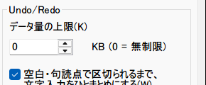

Undoの入力結合
連続したキー入力を1つのUndo単位にまとめる、VS Code風の「入力結合」機能の設計記録。CInsertOpeが挿入テキスト自体を保持しないという既存の制約にどう対応したか、結合を打ち切る4条件、そして動作確認状況の正直な記録をまとめる。

設計方針
従来のsakuraエディタは1文字入力するたびに1回のUndo単位が積まれる。「hello」と入力してからCtrl+Zを押すと「o」→「l」→「l」→「e」→「h」と1文字ずつしか戻せず、VS Codeなど多くのモダンエディタが採用している「区切り文字や一定時間の入力停止まで連続入力を1つのUndo単位としてまとめる」挙動とは異なる。この差を埋めるオプションとしてNKMM_UNDO_COALESCE_TYPINGを追加した。
既定値はOFF(従来通り1文字単位のUndo)で、共通設定「編集」タブから明示的に有効化する、後方互換性を優先したオプトイン設計になっている。
新しいUndoの仕組みを作るのではなく、既存のCOpeBlk(操作ブロック)配列とAppendOpeBlk()の直前に、結合可能なら別ブロックを作らず直前のブロックへ追記する分岐(TryMergeIntoLastOpeBlk())を挟むだけの設計。
COpe自体は挿入した文字列データを保持しないため、後からブロックの中身を検査して「これは区切り文字だったか」を判定することはできない。実際に何を挿入したか知っている呼び出し側で、その場に分類結果をタグ付けする(詳細)。
1文字単位のUndoという従来挙動を変えるため、既存ユーザーの体験を壊さないよう既定値はfalse。共通設定「編集」タブのチェックボックス1つで有効化する。
「分類は挿入した側が行う設計」がこの機能の核心。「結合を打ち切る4条件」「結合処理そのもの」は実装の中身のリファレンス。「動作確認について」は、この文書を検証した時点でわかっていた検証状況を誇張なく記した節。全体の詳細はchangelog/NKMM_UNDO_COALESCE_TYPING.mdを参照。
01分類は挿入した側が行う設計
InsertData_CEditView経由の挿入操作(COpe/CInsertOpe)は、実際に何を挿入したかという文字列データ自体を保持しない(m_cOpeLineDataは使われない)。そのため、結合判定のタイミングでブロックの中身を後から調べても「区切り文字を挿入したのか、通常の文字を挿入したのか」を判別できない。
この制約に対応するため、実際に入力された文字・文字列を知っている呼び出し側で直接分類する方式にした。Command_WCHAR()(CViewCommander_Edit.cpp、通常のキー入力1文字)とCommand_INSTEXT()(CViewCommander_Clipboard.cpp、IME変換確定・クリップボード貼り付け等の文字列一括挿入)が、挿入直後にブロック末尾のCInsertOpeを取り出し、COpe::eCoalesceKindへ分類結果を書き込む。COpeを後から検査するのではなく、「挿入した側」がその場でタグ付けする — これが後からの解析では不可能だった問題を回避する唯一の道になっている。
// COpe.h — 挿入した側が書き込む分類タグ
enum ECoalesceKind{ COALESCE_UNKNOWN = 0, COALESCE_WORD = 1, COALESCE_BREAK = 2 };
ECoalesceKind eCoalesceKind = COALESCE_UNKNOWN;分類していない挿入経路(想定外の呼び出し元など)はCOALESCE_UNKNOWNのままとなり、IsClassifiedSingleInsertBlk()によって結合対象外として自動的に除外される — 分類漏れが「誤って結合される」方向にではなく「安全側(結合しない)」に落ちる設計。
02結合を打ち切る4条件
COpeBuf::TryMergeIntoLastOpeBlk()が、新しいブロックを直前のブロックへ結合してよいかを判定する。以下のいずれかに当たると結合が止まり、次の入力から新しいまとまりが始まる。
| # | 条件 | 判定方法 |
|---|---|---|
| 1 | 区切り文字の入力 | IsUndoCoalesceBreakChar()がtrueを返す文字。ASCIIの記号類(. , ! ? ; : ' " ( ) [ ] { } < > / \ | ` ~ ^ * + = @ # $ % & -)、日本語の主な句読点・括弧類(、。・「」『』【】〈〉《》、全角！？（），．：；)、およびiswspace()がtrueと判定する文字。識別子で使われる_は区切りに含めない |
| 2 | アイドル時間 | 直前の結合からUNDO_COALESCE_IDLE_MS = 1500(ミリ秒)を超えてGetTickCount64()の差が開いた場合。区切り文字が無くても新しいまとまりになる |
| 3 | 改行(Enter) | 改行専用の分岐は無い。改行文字がiswspace()によって条件1の区切り文字と判定されるため、他の区切り文字と同じ経路で必ず区切りになる |
| 4 | カーソル移動等の別操作の介在 | 直前のブロック最後の操作の「操作後」キャレット位置(m_ptCaretPos_PHY_After)と、新ブロック最初の操作の「操作前」キャレット位置(m_ptCaretPos_PHY_Before)を比較。一致しなければ結合しない。カーソル移動・マウスクリック・選択操作等が間に挟まると自動的に不一致になる |
これに加えて、結合対象になるのは「1個のCInsertOpeのみで構成され、かつ挿入側で分類済みのブロック」に限られる(IsClassifiedSingleInsertBlk())。NKMM_MULTI_CURSORの一括編集や選択範囲への上書き入力など複数操作が混在するブロックは対象外で、結合もせず結合の起点にもしない。Redo方向の履歴が残っている場合(IsEnableRedo())も結合しない。
03結合処理そのもの
条件を満たすと、新ブロックからDetachSingleOpe()(唯一の要素を取り出して空にする)で唯一のCOpeを取り出し、直前のブロック(m_vCOpeBlkArr[m_nCurrentPointer - 1])へAppendOpe()で追記し、新ブロック自体はdeleteする。
if( pcTail->IsCoalesceOpen() && (nNow - pcTail->GetCoalesceTick()) <= UNDO_COALESCE_IDLE_MS ){
COpe* pcLastOpeOfTail = pcTail->GetOpe( pcTail->GetNum() - 1 );
COpe* pcFirstOpeOfNew = pcOpeBlk->GetOpe( 0 );
if( pcLastOpeOfTail->m_ptCaretPos_PHY_After == pcFirstOpeOfNew->m_ptCaretPos_PHY_Before ){
COpe* pcMovedOpe = pcOpeBlk->DetachSingleOpe();
pcTail->AppendOpe( pcMovedOpe );
// 結合時刻を更新し、次の文字への猶予をここから再度計る
pcTail->SetCoalesceTick( nNow );
delete pcOpeBlk;
return true;
}
}呼び出し元のCEditView::SetUndoBuffer()は、このTryMergeIntoLastOpeBlk()がfalseを返したときのみ、従来通りAppendOpeBlk()する分岐になっている。結合の可否に関わらず、新ブロック(結合されなければこの後AppendOpeBlk()される)のIsCoalesceOpen()/結合時刻は、このブロック単体が「区切り文字を含まない1文字挿入」であるかどうかに応じて設定し直される。これにより、区切り文字が挟まった直後や改行の直後は結合が止まり、次の入力から新しいまとまりが始まる。
04設定項目
共通設定「編集」タブの「元に戻す」グループに、チェックボックス(IDC_CHECK_bUndoCoalesceTyping)としてUIを追加した。ini項目名はbUndoCoalesceTyping、既定値false。
CommonSetting.h—CommonSetting_Edit::m_bUndoCoalesceTypingCShareData.cpp— 既定値falseを設定CShareData_IO.cpp— ini項目bUndoCoalesceTypingの読み書きCPropComEdit.cpp— チェックボックスとのSetData/GetData
ダイアログリソース(sakura_core/sakura_rc.rc)はUTF-16LE(BOM付き)形式のバイナリ差分として追加されている。英語版sakura_lang_en_US/sakura_lang_rc.rcは未対応で、ビルド・実行は可能だがUIのチェックボックスは出ない。
05動作確認について / 既知の制約
この文書の作成にあたり、コミットメッセージ・diff上にはビルド確認やGUI実機確認についての記述は残っていなかった。コミット1a490c48eの差分と現在のコードを静的に読んだ内容からは、実際にキー入力してUndo単位がまとまるか、1.5秒のアイドル判定が意図通り働くか、共通設定ダイアログのチェックボックスが正しく表示・保存されるか、といった実機での動作確認は裏付けが取れていない。
過去のセッション記録には、この機能の実装過程で「CInsertOpe自体が挿入テキストを保持しない」という制約に起因する実バグが見つかり、後からブロックの中身を調べて分類する方式から現在の「挿入した側でタグ付けする」方式に修正された、という記述がある。読み取れた現在のコード構成(Command_WCHAR()/Command_INSTEXT()が挿入直後にeCoalesceKindを設定する構成)はこの記述と一致するが、GUI自動化による実機確認済みという記述の具体的なログはこの文書の作成時点のリポジトリ上には見当たらず、コミット差分・コードからは検証できていない。
- 区切り文字判定は完全なUnicode網羅を狙っていない。ASCIIの記号類と主な日本語の句読点・括弧類のみを対象とする設計上の割り切り。
- 結合対象は「1個の
CInsertOpeのみで構成されたブロック」に限られ、NKMM_MULTI_CURSORの一括編集や選択範囲への上書き入力は対象外。 - Redo方向の履歴が残っている場合は結合しない。
- 既定値OFFのため、有効化しない限り従来と挙動は変わらない。
06変更ファイル一覧
sakura_core/COpe.h—IsUndoCoalesceBreakChar()宣言、ECoalesceKind/eCoalesceKind追加sakura_core/COpeBlk.h/.cpp—IsCoalesceOpen()/SetCoalesceOpen()、GetCoalesceTick()/SetCoalesceTick()、DetachSingleOpe()追加sakura_core/COpeBuf.cpp/.h—IsUndoCoalesceBreakChar()本体、UNDO_COALESCE_IDLE_MS、TryMergeIntoLastOpeBlk()追加sakura_core/cmd/CViewCommander_Edit.cpp—Command_WCHAR()での分類タグ付けsakura_core/cmd/CViewCommander_Clipboard.cpp—Command_INSTEXT()での分類タグ付けsakura_core/view/CEditView.cpp—SetUndoBuffer()の結合分岐sakura_core/env/CommonSetting.h—m_bUndoCoalesceTyping追加sakura_core/env/CShareData.cpp— 既定値設定sakura_core/env/CShareData_IO.cpp— ini項目の読み書きsakura_core/prop/CPropComEdit.cpp— 共通設定ダイアログとの連携sakura_core/sakura_rc.h—IDC_CHECK_bUndoCoalesceTyping追加sakura_core/sakura_rc.rc— チェックボックスのダイアログリソース追加(UTF-16LE)sakura_core/my_config.h—NKMM_UNDO_COALESCE_TYPINGフラグ定義